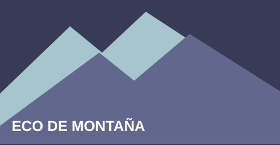
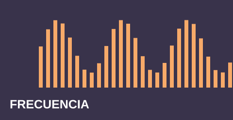

Bruma
Un acorde suave crece y se desvanece como la neblina entre las montañas del cartel.
Esta página reúne dos propuestas de exploración visual para Morlakos. Ambas parten de la misma pregunta: ¿cuánto puede contar una forma simple?

Propuesta de cartel inspirado en las siluetas de las montañas de Cuenca. Las capas crean profundidad con muy pocos colores.
Ilustración vectorial · SVG
Propuesta para la portada de una pista electrónica. Las barras convierten el ritmo en una composición gráfica.
Ilustración vectorial · SVGUn acorde suave crece y se desvanece como la neblina entre las montañas del cartel.
Tres siluetas de montaña se desplazan a distintas velocidades, dando profundidad al paisaje de Eco de montaña.